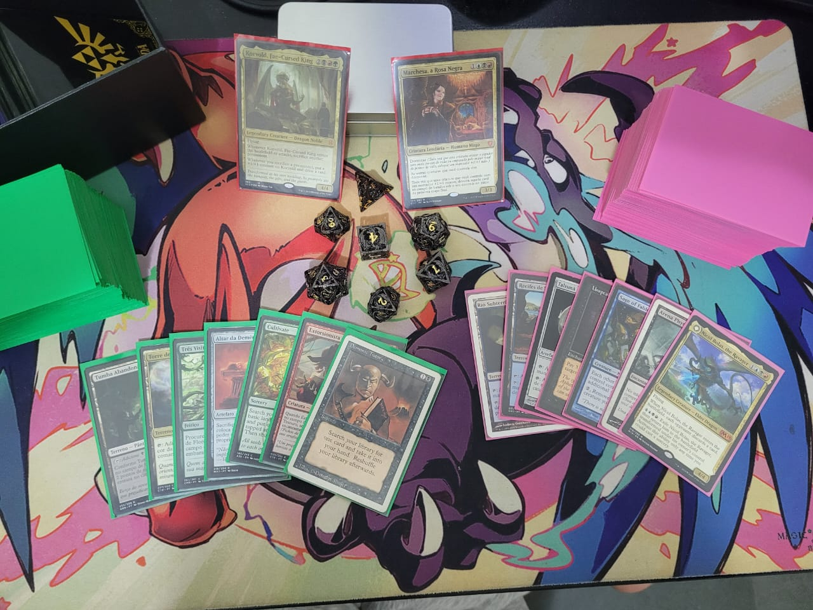
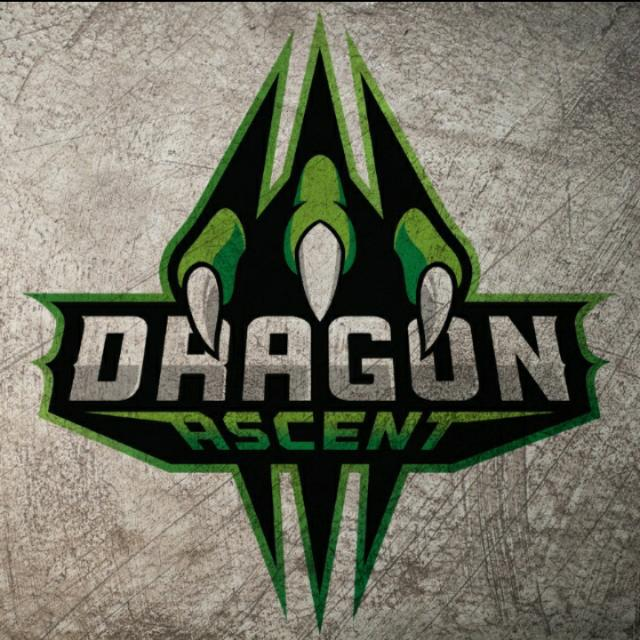

" Nerdice "
Pode não parecer mas sim, eu me considero muito nerd, amo demais todo e qualquer jogo, sou louco pelos
jogos da Nintendo desde pequeno, meu primeiro jogo foi Zelda, já joguei a maioria dos jogos diversos
jogos dessa franquia. O Cardgame, já joguei muitos como os mais famosos Yu-Gi-Oh e Pokemon TCG, mas
o meu favorito deles é o Magic The Garthering, jogo a muitos anos com meus amigos e tenho um carinho
por esse jogo especial, lembro de todas as noites viradas me divertindo com meus amigos, momentos
simplesmente mágicos !

" E-Sports "
A muitos anos me aventuro em vários jogos, sempre com a mentalidade de ser o mais competitivo possível,
Pokemon não podia ser diferente, joguei tantos jogos de Pokemon que não tem como listar aqui, estou
treinando para participar do torneio de VGC ( Batalhas em duplas) que seria o modelo oficial de competição
da franqui mas hoje eu faço parte do cenário brasileiro de Pokemon Unite como um dos " Top 10 times da América do Sul "
Sendo um dos 5 melhores times nos primeiros 6 meses do jogo.
" Atleta "
Fazer atividades físicas sempre foram uma das minhas paixões, pratiquei todo tipo de esporte
mas o que mais amei foi a Natação, nadei por muitos anos e cheguei a competir em travessias
ao mar aberto, ganhando na minha primeira participação no "Rei do Mar" com 15 anos, uma travessia que tinha como
ditancia 2km e uma corrida a cada 1km. Hoje a minha principal atividade "atletica" é a trilha,
já fiz muitas e adoro esse contato com a natureza e de ser desafiado.